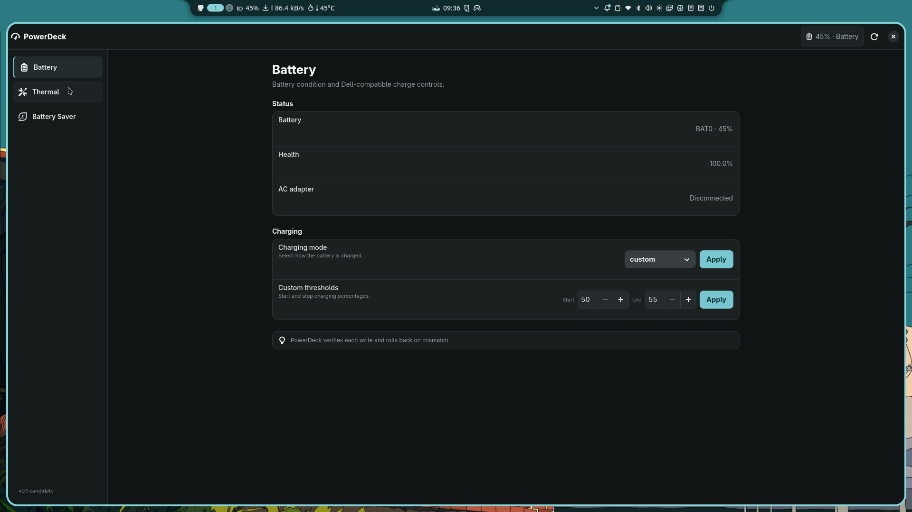

What PowerDeck does
PowerDeck keeps the graphical application unprivileged. Validated hardware changes are delegated to a system service, read back after the write, and rolled back when verification fails.
Focused controls
Battery
Battery status, bracketed charge_types, charging modes, transactional custom thresholds, verification, and exact raw-token rollback.
Thermal
Validated quiet, cool, balanced, and performance writes through Linux platform_profile.
Battery Saver
Brightness, refresh rate, power profile, thermal profile, Intel P-state limits, keyboard backlight, and optional audio mute.
Interface design
The desktop shell intentionally stays simple: one retained Gtk.Stack, no duplicate page switcher, no blur, no glass, no gradients, and no continuous page animations. The left rail contains only real v0.1 destinations.
GTK4 / Libadwaita, retained stack, left navigation
D-Bus, Polkit, validated battery / thermal / CPU writes
AC transitions, Niri, brightness, audio, restore ownership
Interactive app demo
The browser simulation mirrors the current left-sidebar desktop layout.
powerdeckd.Battery
Battery condition and Dell-compatible charge controls.
Status
Charging
Thermal
Apply a kernel platform profile through powerdeckd.
Current state
Profile
Battery Saver
Turn Battery Saver on or off directly, or configure optional automation.
Runtime
Automation
Display
Performance
Devices
Settings
Install the local candidate
PowerDeck depends on native Linux services as well as Python packages. pip cannot install GTK, Libadwaita, Polkit, brightness tools, or power-profiles-daemon.
Required on Arch/CachyOS
sudo pacman -S --needed \
git \
python \
python-dbus-next \
python-gobject \
gtk4 \
libadwaita \
polkit \
brightnessctl \
power-profiles-daemonOptional feature dependencies
niriInternal-panel refresh-rate switchingwireplumber / wpctlOptional audio mute and restoreClone and install
git clone https://github.com/minh23102011/fork-dell-power-manager.git
cd fork-dell-power-manager
./scripts/check-dependencies.sh
python -m venv .venv
source .venv/bin/activate.fish
python -m pip install --upgrade pip
python -m pip install -e ".[dev]"
deactivate
./scripts/install-local-v0.1.sh
./scripts/v0.1-check.sh
./powerdeckCurrent limitations
- Dell Inspiron 15 3530 is the only real-hardware validation target.
- Battery charging writes still need controlled hardware validation after the combined
charge_typesbackend change. - Fan curves, direct fan control, undervolting, RAPL tuning, and per-app policies are outside v0.1.
- The HTML demo is a simulation, not a browser control surface.